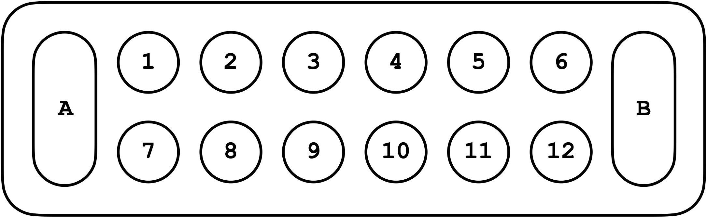

//how to play mancala by yourself

for (i = 48; i > 0; i = i - 4){
place four marbles in the following small pit;
}
n = random() * 11 + 1;
pick up all the marbles in the small pit numbered n;
while (total number of marbles across all small pits > 0){
for (i = marbles in hand; i > 0; i--){
place one marble in the following pit, clockwise;
}
if (last pit into which marble was placed = non-empty && small){
pick up all the marbles in this pit;
} else {
n = random() * 11 + 1;
while (the pit numbered n is empty){
n = random() * 11 + 1;
}
pick up all the marbles in the small pit numbered n;
}
}
countA = 0;
countB = 0;
for (i = marbles in large pit A; i > 0; i--){
countA++;
}
for (i = marbles in large pit B; i > 0; i--){
countB++;
}